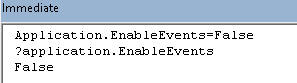

Şimdi bunlara detaylıca bakalım.
Debug menüsünden Toggle Breakpoint diyerek
veya F9 tuşuna basarak BP koyabiliriz, veya var olan BP'i kaldırabiliriz. Genelde
menüyü kullanmak yerine ya F9'a tıklarız, ya da iki aşağıda bulunan
resimdeki bordo renkli dairenin bulunduğu yere tıklarız, kaldırmak için
bordo daireye tekrar tıklarız.
Kodumuzun farklı yerlerine birden fazla olacak şekilde BP koyabiliriz.
Hepsini kaldırmak için menüde Clear All Breakpoints diyebilir veya
Ctrl+Shift+F9 tuşlarına basabiliriz.
Örnek bir BP konmuş satırın
görüntüsü aşaıdaki gibidir.
Break moddayken izleme amacıyla, değişkenlerin üzerine gelip onların o
anki değerlerini görebilirsiniz, veya izleme(debugging) pencerlerini kullanabilirsiniz.
BP'a denk geldikten sonra izleme dışında bir eylemde bulunmak isterseniz
3 seçeneğiz var:
- Reset tuşu ile durdurmak
- F5 ile tam gaz devam etmek
- F8 ile adım adım ilerlemek(F8 ve türevleri)
NOT:Bu BP'lar sadece ilgili oturum
için geçerlidirler, yani dosya ile birlikte kaydolmazlar.
dikkat:BP'a denk gelip incelemenizi
yaptığınızda kodu durdurmayı tercih ederseniz, dikkat etmeniz gereken bir
nokta var. Eğer program girişinde bazı Application propertylerine(DisplayAlerts
gibi) False
atadıysanız bunları tekrar True yapmadan durdurmamalısınız. Aksi halde üzücü
sonuçlarla karşılaşabilirsiniz.
Adım adım ilerlemek
F8 ile adım adım ilerleme
Normalde bir makroyu çalıştırmak için Standart menü çubuğundan Play butonuna
veya F5 tuşuna basarız, böylece kod baştan sona tek seferde çalışmış olur.
Ancak kodumuzun, hangi aşamalardan geçtiğini ve özellikle bir yerde
hata alıyorsa tam olarak nerede ve niçin hata aldığını görmek için F8
tuşu ile kodu çalıştırırız. Böylece kodunuz satır satır çalıştırılır ve
o ana kadar kodun neler yaptığını, değişkenlerin hangi değerlere sahip
olduğunu fareyi değişkenin üzerine gelip bekleterek görebilirsiniz.
Shift+F8 ile prosedürleri atlayarak adım adım ilerleme
Normal F8'le tek farkı, eğer kodumuzda bir satırda bir başka prosedürü
çağırıyorsak, bunun içine de girip satır satır ilermelek yerine o
prosedürü tamamen çalıştırıp tekrar ana prosedüre dönmemizi sağlar. Alt
prosedürün hatasız çalıştığından eminsek bunu kullanırız, böylece onun
içinde satır satır ilerleyerek boşuna vakit kaybetmemiş oluruz.
Shift+Ctrl+F8 ile adım adım modundan çıkma
Uzun bir süre bu kombinasyonun amacını tam anlayamamıştım, hatta bu
sayfayı ilk yazdığımda bu kombinasyonu gereksiz bulduğumu bile
belirtmiştim. Ama bir gün tam da böyle birşeye ihtiyacım oldu. Şöyle ki,
bir prosedür içindeyken F8 ile ilerlerken başka bir prosedüre
dallandığınızda bazen orada uzun bir döngüye girmiş olabiliyorsunuz ve
bir anca önce o prosedürden çıkıp ana prosedüre dönmek ve oradan F8 ile
devam etmek istiyorsunuz. İşte böyle bir durumda bu kombinasyon ile o
alt preosdürü hızlıca tamamlayıp ilk prosedürede kaldığınız yere
gelirsiniz.
Şöyle düşünenleriniz olabilir tabi; bunu ana prosedürden alta
dallandığım yerin bir satır altına breakpoint koyarak ve F5'e basarak da
yapabilirdim. Evet yapabilirsiniz ama bunu en başta yapmanız gerekirdi.
Bir de bazen kodunuz o kadar karmaşık olabilir ki, ordan oraya
dallanarak gelmişsinizdir, tam olarak nereye breakpoint koyacağınızı
bile bilemeyebilisiz. O yüzden en güzeli, bu kombinasyonu
çalıştırmaktır.
Ctrl+F8 ile cursorın bulunduğu yere kadar hızlıca ilerleme
Bence bu kombinasyona da gerek yok, onun yerine ilglili yere BP koyun ve F5 yapın,
aynı görevi görür. Üstelik BP+F5'in şöyle bir avantajı da var, aynı kodu tekrar çalıştırmanız gerekebilir ve cursor farklı yerdeyse
tekrar oraya gelmeye çalışacaksınız, bu da ekstra zaman kaybı demektir. BP'i bi kere koyun ve
kontrolleriniz bitene kadar orada kalsın.
Ctrl+F9 ile çalıştırılacak kod kısmını belirlemek
Bu, break moddayken sarı oku mousela taşımaya benzer. Diyelim 5
sayfalık bir kodunuz var. Biliyorsunuzdur ki, kodun üst kısımlarında sorun
yok, son paragrafta bi yerde sorun çıkarıyor. Kodun üst kısımlarında F8
ile ilerlediniz, sonraki birkaç sayfalık kodu çalıştırmaya gerek yok diyorsunuz.
Şimdi normalde bu kombinasyon olmasaydı
fareyle sarı oku 5 sayfa aşağı indirmek gerekirdi, ki bunu deneyin, çok
sinir bozucu birşeydir.
Halbuki, bu özellik
sayesinde, sarı okun gelmesini istediğim yere bi yere tıklarım ve
Ctrl+F9'a (veya debug menüsünde Set Next statement)
tıklarım, böylece aradaki
kodlar çalışmadan doğrudan bu satıra gelmiş olurum.
Ctrl+F9'dan sonra doğrudan istediğimiz yere geldik.
Tabi burda unutulmaması gereken birşey var; üst kısımlarda F8 ile
ilerlerken, aşağıya Ctrl+F9 ile geleceğiniz noktada bir değişken varsa,
üst tarafta buna değer atandığı yerleri de F8 ile geçtikten sonra
buraya sıçramamız gerekir yoksa istediğiniz sonucu elde
edemeyebilirsiniz.
Debug.Print ve Debug.Assert
Debug.Print
Debug.Print ile biraz aşağıda değineceğimiz Immedaite Window'a doğrudan
birşeyler yazdırabiliyoruz. Ben genelde şöyle kullanıyorum:
Debug.Print ifadesinden hemen sonraki satıra BP koyarım, Immediate Windowa ne yazdığına bakarak testimin sonucunu görürüm,
veya testlerimde arka arkaya birşeylerin değerini test edeceksem MsgBox
alternatifi olarak kullanırım.
Bunu illa Break modda da kullanmak zorunda değilsiniz, normal bir F5
çalıştırmasında da kullanılabilir.
Burada
içinde çok fazla Debug.Print barndıran bir örnek görebilrisiniz.
Debug.Assert
Bir nevi koşullu BP olarak düşünebileceğimiz Assert metodu nerede ve
ne zaman kullanılacağı biraz kafa karıştırcı bir metoddur. Kodunuzda bir hata olup olmadığını size önceden söyleyebilecek
güce sahiptir.
Bunun, bir sonraki bölümde göreceğimiz, hata yakalama
ifadeleriyle karıştırılmaması gerekiyor. Hata yakalama blokları;
kullanıcı, kodu çalıştırırken bir hata ile karşılaştığında ne yapılması
gerektiğini söyler; Assert ise kod tasarlanırken kodu yazana nerde hata olduğunu
söyler. Yani kodunuzu çalıştırdığınızda bir yerlerde hata çıkıyor ama
bi türlü nerde olduğunu bulamıyorsunuzdur. İşte böyle durumlarda Assert
özelliğini baştan tanımlamanız durumunda hatayı kolaylıkla tespit
edebilirsiniz.
Kullanım şekli şöyledir: Debug.Assert koşul
gerçeklenmiyorsa
Bu şekilde kullandığımızda VBA'e şunu demiş oluyoruz: Koşul
gerçeklenmediğinde Break moda gir.
Mesela aşağıdaki örnekte For döngüsü içinde bir yerde yeni sayfa
yaratılıyor. Ama biz 5'ten fazla sayfa olsun istemiyoruz. Kodumuz bize
bir şekilde 5ten fazla sayfa üretirse o anda Break moda girmiş olur ve
biz de duruma müdahale ederiz.
Debug.Assert Sheets.Count <=5
For i=1 to x
'çeşitli kodlar
Sheets.Add
'çeşitli kodlar
Next i
Bir diğer pratik kullanımı da bir döngüde hızlıca belli bi yere kadar
ilerlemek ve hatayı son bölümde incelemek olabilir. Mesela aşağıdaki kodu çalıştırdığınız aktif sayfa
1000 satırlık bir veri içeriyor olsun. Son satırda bi hata alıyorsunuz, F8
ile tek tek gitmek isteseniz 999 kere F8 yapmanız lazım, bunun yerine
Debug.Assert ActiveCell.Row < 1000 diyip F5 yaparak
hızlıca 999. satıra geliriz.
Sub pagebreak()
[a2].Select
ActiveWindow.View = xlPageBreakPreview
ActiveSheet.VPageBreaks(1).DragOff Direction:=xlToRight, RegionIndex:=1
Do Until IsEmpty(ActiveCell.Offset(1, 0))
Debug.Assert ActiveCell.Row < 1000
ActiveCell.Offset(1, 0).Select
If ActiveCell.Value <> ActiveCell.Offset(-1, 0).Value Then
Set ActiveSheet.HPageBreaks(2).Location = ActiveCell
End If
Loop
End Sub
Debug.Assert False
Workbook_Open eventi gibi dosya henüz açık olmadığı için manuel kontrolü ele alamadığınız veya Worksheet_Change eventi gibi manuel debugging başlatamadığınız veya bir şekilde kodun bir yerine geldiğinde durmasını ve beklemeye geçmesini istediğiniz durumlarda kodun başlangıcında kontrolü ele almak isteyebilirsiniz. Bunu breakpointlerle de yapabilirsiniz ancak breakpointler dosya kapandığı zaman kaybolurlar. Bu breakpointleri tekrar tekrar oluşturmak istmeiyorsanız işte bu tür durumlarda Debug.Assert'ün bu özel halini kullanabilirsiniz. Bu şekilde ilgili bu satıra gelindiği anda durur ve sizi bekler, bundan sonra F8 ile ilerleyebilirsiniz.
Debug.Assert kullanımı konusunda daha geniş bilgiyi burada
bulabilirsiniz.
3 adet izleme pencresi bulunuyor.
- Immediate Window
- Locals Window
- Watch Window
Bunlardan en çok kullanılan dolayısıyla ana izleme penceresi
ünvanı verebileceğimiz pencere Immediate Window'dur. Sırayla
inceleyelim.
Immediate Window
Ctrl+G tuş kombinasyonu veya View meünsünden Immediate Window
butonu ile aktive edebilirsiniz.
Bununla neler yapabilriz?
- F8 ile adım adım ilerlerken bu pencereyi açıp o an bir
değerin ne olduğunu görebiliriz
- Bir kod çalıştırabiliriz
- Application seviyesinde bazı özellikleri
sorgulayabiliriz.
Birkaç örnekle bakalım.
Mesela aşağıdaki kodda döngüde birkaç kez ilerledikten sonra
i'nin hangi değere ait olduğunu sorgulamak için Immediate
Window'a "?i" yazıp Enter'a bastım. Gördüğünüz
gibi bir
değişkenin değerinin ne olduğunu sorgulamak(bilgi
öğrenmek) için başına ? işaret koyup Entera
basarız.
Bu sefer Application seviyesinde bir kod yazalım. Dikkat edin
F8 ile giderken yapmıyorum bunu, hatta bir makro içinde bile
yapmıyorum. Yine bilgi öğrenmek istediğim için başına ? koyuyorum.
Öğrendiğim bilgi de XLSTART klasörünün yeridir.
Şimdi ise sorgulama yapmak yerine bir kod çalıştıralım ve bu kod yine
Application
seviyesinde olsun.

Gördüğünüz gibi ilk olarak Enableevents özelliğine False
değerini atadım, hemen arkasından da ? koyarak bu özelliğin durumunu
öğrendim. Bu arada bazen geçici olarak bu ve bununu gibi
özelliklere bir değer atamanız gerekecek, bunun için bi prosedür
yaratıp içine bu kodu yazmaktansa bu pencereyi
kullanabilirsiniz.
Son olarak da bi kodun içinde olalım olmayalım farketmez, daha normal(değişken
içermemesi kaydıyla)
bir kod çalıştıralım.
Bunu yazp Enter'a basınca bi mesaj kutusu çıkacaktır.
Locals Window
Local penceresi, kodunuz üzerinde F8 ile tek
tek ilerlerken o anda değişkenlerin değerini ayrı ayrı
görebileceğiniz bir penceredir. Bu bizi aslında birsürü
Debug.Print yazmaktan veya değişkenlerin üzerine gelip
bekleyerek pop-up kutucuk ile değişkenlerin değerini tek tek
görmee zahmetinden kurataran bir araçtır.
Bu pencrede local değişkenlerin değerini ve UserForm
seviyesindeki tanımlanmış değişkenlerin değerini görebiliyoruz.
Modül seviyesindeki değişkenler için Watch
penceresine bakarız.
Aşağıdaki pencerede ad değişkenine volkan değeri, i
değişkenine de 1 değeri atanmış durumda. Kelime değişkenine ise
henüz bir atama olmadığı için Empty görünmektedir. Ayrıca
farkettiyseniz değişkenlerin tiplerini de görmekteyiz. İlk iki
değişken deklare edilmediği için Variant tipindedir, ama
aldıkları değer itibarıyle String ve Integer değer
tutmaktadırlar.
Watch Window
Bu pencere ile Modül seviyesindeki değişkenlerin durumunu
görebiliyor, çeşitli koşullar girerek bu koşulların
gerçekleşmesi veya girdiğimiz değişkenlerin değeri değiştiğinde
kodun Break mod'a girmesini sağlayabiliyoruz.
3 çeşit izleme çeşidi var.
- Watch Expression:Local Window gibi
çalışır. Modül seviyesindeki değişiklikler de izlenir.
- Break When Value is True:Verdiğiniz
koşul sağlandığında Break moda girer(Bir nevi
Debug.Assert görevi görür)
- Break When Value Changes:Verdiğiniz
değişkenin değeri değişince break moda girer
Aşağıdaki örnekte i=5 olunca break mod'a girsin demiş olduk.
Aynı anda hem Local hem Watch windowu görüyoruz.
Call Stack
Bu pencereyi hiç kullanmadım açıkçası. Görevi, o anda aktif
olarak çağrı yapılmış tüm prosedürleri göstermek. İhtiyacınız
olmaz düşüncesiyle detaya girmiyorum.